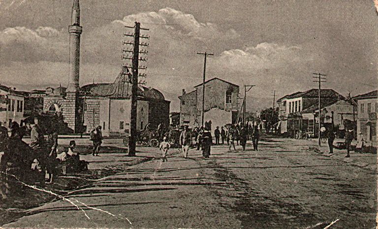
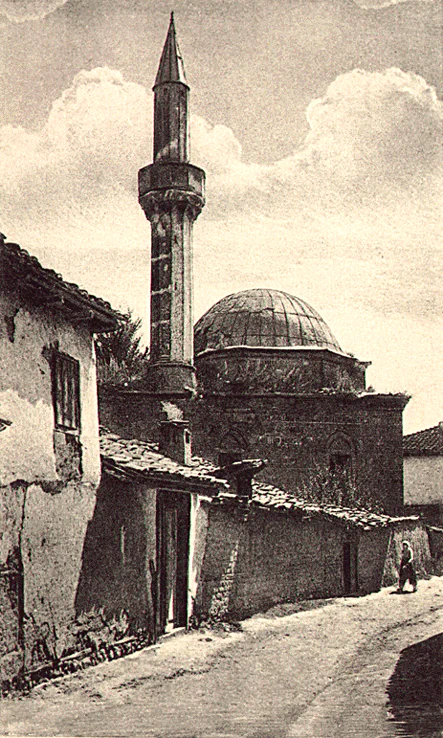
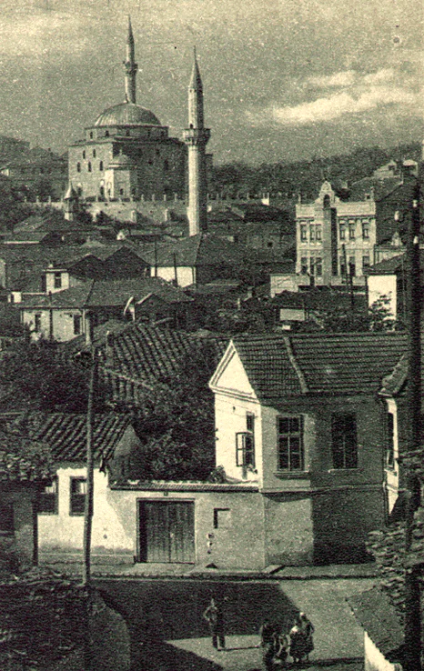

Описание
Бурмали джамия, снимана около средата на 19 век. Единствената джамия на десния бряг на р. Вардар. Намирала се точно до Каменния мост. Името си получава от спираловидното (бурмали) стебло на минарето. Издигната е в края на 15 век, а съборена през 1925 година, за да се построи на нейно място Офицерският дом.

Бурмали джамия и няколко сгради около нея. Неоформена улица. Място за събиране на превозвачи на стоки с волски каруци. - края на 19 век

Бурмали джамия - 1912 - 1918 година. Южният подход към Каменния мост с гъсто наредени търговски и занаятчийски дюкяни.

Бурмали джамия с част от Каменния мост и алеята до нея. Вляво от нея се виждат сградите пред самия вход на Каменния мост, в които се помещавали дюкяни и занаятчии. - 1910-те.

Бурмали джамия - началото на 1920-те. Пред моста се забелязват първите павилиони за услуги и продажби. Павилионите имат подчертана архитектура в детайлите, т.е. в оформлението на покривите.

Бурмали джамия - 1920 година.

Хатунджук джамия с тюрбето. На заден план се вижда минарето на Яя паша джамия. Хатунджук джамия датира от 1511 година. Строителка на джамията е Хани Хатун, една от дъщерите на Яя паша. Името на джамията, Хатунджук, в превод означава малка госпожа (дама) или госпожица. - края на 19 век.

Хаджи Балабан джамия. Намира се между Куршумли хан и Дуканджик джамия. Издигната през 15 век. (края на 19 век)

Бейската кула (или Феодалната кула). Тази кула е принадлежала на някакъв бей. Намира се пред главния вход на днешния Дом на армията на Р. Македония. Периодът на издигането ѝ е неизвестен, но се предполага, че е от края на 17 или началото на 18 век. Снимката е от 19 век.

Бейската кула в края на 19 век.

Бейската кула в началото на 20 век.

Бейската кула, 1910-те.

Старата Казанджилер джамия, в непосредствена близост до Куршумли хан. Издигната през 15 век, известна като джамията на казанджиите. (днес не съществува)
Дуканджик джамия, построена в средата на 16 век.

Куршумли хан, построен в средата на 16 век. Монументална сграда на ислямската светска архитектура. Намира се в старата скопска чаршия, точно до днешния Музей на Македония.

Часовниковата кула и Султан Мурад джамия - 1920-те. Часовниковата кула е издигната в средата на 16 век (1566 - 1572), като първата часовникова кула в Османската държава. Часовниковият механизъм и майсторът, който трябвало да се грижи за него, са донесени от Сигетвар - Унгария, след превземането на града от турците. Султан Мурад джамия: султан Мурад II, бащата на султан Мехмед Завоевателя, я издига през 1436 година като свое дарение.

Султан Мурад джамия, 1910-те.

Часовниковата кула и Султан Мурад джамия - 1920-те.

Часовниковата кула и Султан Мурад джамия - 1920-те.

Часовниковата кула и Султан Мурад джамия - 1920-те.

Часовниковата кула и Султан Мурад джамия - 1920-те.

Гази Иса бей джамия - 1920-те. Издигната от Иса бей, син на Исхак бей, като дарение след смъртта на баща му. (15 век)

Гази Иса бей джамия - 1920-те. Издигната от Иса бей, син на Исхак бей, като дарение след смъртта на баща му. (15 век)

Гази Иса бей джамия - 1920-те. Издигната от Иса бей, син на Исхак бей, като дарение след смъртта на баща му. (15 век)

Гази Иса бей джамия - 1920-те.

Турските гробища, а на заден план Гази Иса бей джамия - 1920-те.

Гази Иса бей джамия - дворът - 1920-те.

Гази Иса бей джамия - дворът - 1920-те.

Мустафа паша джамия - 1920-те. Издигната през 1492 година от тогавашния управител Мустафа паша.

Мустафа паша джамия - 1920-те. Издигната през 1492 година от тогавашния управител Мустафа паша.

Мустафа паша джамия - 1920-те.

Мустафа паша джамия на заден план, а под нея отчасти се вижда Паша Йигит бей джамия, която е била най-старата джамия в Скопие. (днес не съществува) - 1920-те.

Улица в старата част на града, а на заден план е Исхак бей джамия, или Аладжа джамия. Тази джамия е издигната от управителя на Скопие Исхак бей (син на Паша Йигит бей - завоевателят на Скопие) през първата половина на 15 век, 1438 година. Освен джамията, като свое дарение, той издига и тюрбе, медресе, конаци и сгради от ислямската светска архитектура. През 1519 година джамията е преустроена и са добавени двата странични кораба от Мехмед, внук на Исхак бей - 1920-те.
Ориентация

На старата ориентировъчна карта
Фотоалбум


Тема
 Акведукт4 картички
Акведукт4 картички Кале30 картички
Кале30 картички Мостове60 картички
Мостове60 картички Кей58 картички
Кей58 картички Площад46 картички
Площад46 картички Сгради66 картички
Сгради66 картички Християнски храмове19 картички
Християнски храмове19 картички Мюсюлмански сгради33 картички
Мюсюлмански сгради33 картички Офицерски дом29 картички
Офицерски дом29 картички Театър28 картички
Театър28 картички Железопътна гара13 картички
Железопътна гара13 картички Училища36 картички
Училища36 картички Паркове12 картички
Паркове12 картички Пазари18 картички
Пазари18 картички Улици38 картички
Улици38 картички Панорама I60 картички
Панорама I60 картички Панорама II30 картички
Панорама II30 картички Колажи55 картички
Колажи55 картички Наводнения9 картички
Наводнения9 картички Земетресение27 картички
Земетресение27 картички Скопие 200026 картички
Скопие 200026 картички